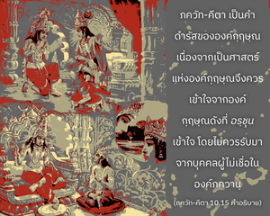
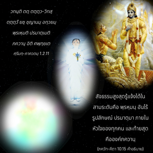

แน่นอนว่าพระองค์เท่านั้นที่ทราบตัวพระองค์เองด้วยพลังเบื้องสูงของพระองค์ โอ้ องค์ภควาน แหล่งกำเนิดของทุกสิ่งทุกอย่าง พระเจ้าของมวลชีวิต พระเจ้าของเหล่าเทวดา พระเจ้าแห่งจักรวาล




องค์ภควานฺ ศฺรีกฺฤษฺณ ทรงรู้ได้โดยบุคคลผู้มีความสัมพันธ์กับพระองค์โดยผ่านทางวิธีปฏิบัติการอุทิศตนเสียสละรับใช้เหมือนกับ อรฺชุน และเหล่าสาวกของ อรฺชุน บุคคลผู้มีความคิดเยี่ยงมารหรือไม่เชื่อในองค์ภควานฺจะไม่สามารถรู้ถึงองค์กฺฤษฺณได้ การคาดคะเนทางจิตใจซึ่งนำให้ออกห่างจากพระองค์เป็นบาปอันร้ายแรง และผู้ที่ไม่รู้จักองค์กฺฤษฺณไม่ควรพยายามวิจารณ์ ภควัท-คีตา ภควัท-คีตา เป็นคำดำรัสขององค์กฺฤษฺณเนื่องจากเป็นศาสตร์แห่งองค์กฺฤษฺณจึงควรเข้าใจจากองค์กฺฤษฺณดังที่ อรฺชุน เข้าใจ โดยไม่ควรรับมาจากบุคคลผู้ไม่เชื่อในองค์ภควานฺ
ดังที่ได้กล่าวไว้ใน ศฺรีมทฺ-ภาควตมฺ (1.2.11)
วทนฺติ ตตฺ ตตฺตฺว-วิทสฺ
ตตฺตฺวํ ยชฺ ชฺญานมฺ อทฺวยมฺ
พฺรเหฺมติ ปรมาตฺเมติ
ภควานฺ อิติ ศพฺทฺยเต
สัจธรรมสูงสุดรู้แจ้งได้ในสามระดับคือ พฺรหฺมนฺ อันไร้รูปลักษณ์ ปรมาตฺมา ภายในหัวใจของทุกคน และท้ายสุดคือองค์ภควานฺในระดับท้ายสุดแห่งการเข้าใจสัจธรรมจะมาถึงบุคลิกภาพสูงสุดแห่งพระเจ้า มนุษย์ธรรมดา หรือแม้แต่ผู้ที่หลุดพ้นแล้วซึ่งรู้แจ้ง พฺรหฺมนฺ อันไร้รูปลักษณ์หรือรู้แจ้ง ปรมาตฺมา ผู้ประทับภายในหัวใจของทุกคนอาจไม่เข้าใจองค์ภควานฺ ดังนั้น บุคคลเหล่านี้อาจพยายามเข้าใจองค์ภควานฺจากโศลกต่างๆ ใน ภควัท-คีตา ที่องค์กฺฤษฺณทรงเป็นผู้ตรัส บางครั้งพวกไม่เชื่อในรูปลักษณ์จึงยอมรับว่าองค์กฺฤษฺณทรงเป็นองค์ภควานฺ หรือยอมรับความเชื่อถือได้ของพระองค์ ถึงกระนั้น ยังมีบุคคลผู้หลุดพ้นแล้วมากมายที่ไม่สามารถเข้าใจองค์กฺฤษฺณว่าเป็น ปุรุโษตฺตม บุคลิกภาพสูงสุด ดังนั้น อรฺชุน เรียกพระองค์ว่า ปุรุโษตฺตม เช่นนี้ยังอาจไม่เข้าใจว่าองค์กฺฤษฺณทรงเป็นพระบิดาของมวลชีวิต ฉะนั้น อรฺชุน เรียกพระองค์ว่า ภูต-ภาวน และถ้าหากใครทราบว่าพระองค์ทรงเป็นพระบิดาของมวลชีวิต แต่อาจไม่ทราบว่าพระองค์ทรงเป็นผู้ควบคุมสูงสุด อรฺชุน จึงเรียกพระองค์ว่า ภูเตศ ผู้ควบคุมสูงสุดของทุกคน แม้หากทราบว่าองค์กฺฤษฺณทรงเป็นผู้ควบคุมสูงสุดของมวลชีวิต แต่อาจไม่ทราบว่าพระองค์ทรงเป็นแหล่งกำเนิดของเทวดา ดังนั้น ตรงนี้ได้เรียกพระองค์ว่า เทว-เทว พระเจ้าผู้ทรงได้รับการบูชาจากมวลเทวดา และแม้หากทราบว่าพระองค์ทรงเป็นพระเจ้าที่เคารพบูชาของมวลเทวดา แต่อาจไม่ทราบว่าพระองค์ทรงเป็นเจ้าของสูงสุดของทุกสิ่งทุกอย่างจึงเรียกพระองค์ว่า ชคตฺ-ปติ ฉะนั้น จากความรู้แจ้งของ อรฺชุน เรื่องความจริงเกี่ยวกับองค์กฺฤษฺณนั้นได้สถาปนาไว้ในโศลกนี้ และพวกเราควรเจริญรอยตามพระบาทของ อรฺชุน ในการที่จะเข้าใจองค์กฺฤษฺณตามความเป็นจริง